جبور لي  لشحنات BPS
لشحنات BPS
الملخص
نكشف عن بنى جبرية عليا على تيارات نوثر وشحنات BPS.
ومن المعروف أن أصناف التكافؤ للتيارات المحفوظة تكوّن جبراً من نوع لي.
نبيّن أن ذلك، على الأقل بالنسبة إلى تناظرات فضاء الهدف في نماذج سيغما العليا ذات المعلمات من نمط WZW،
يرتفع طبيعياً إلى بنية جبر لي  على تيارات نوثر نفسها.
وعند تطبيق ذلك على دوال الفعل من نمط Green-Schwarz
لنماذج سيغما للبرانات الفائقة
على تيارات نوثر نفسها.
وعند تطبيق ذلك على دوال الفعل من نمط Green-Schwarz
لنماذج سيغما للبرانات الفائقة  ينتج عن ذلك تنقيحات بجبر لي فائق
ينتج عن ذلك تنقيحات بجبر لي فائق  لامتدادات شحنات برانات BPS التقليدية في جبور التناظر الفائق. ونناقش هذا ضمن عمومية
الهندسة التفاضلية العليا، حيث ينطبق أيضاً على البرانات ذات حقول معيارية عليا على حجم عالمها.
وعند تطبيقه على نموذج سيغما للبرانة M5 نستعيد، ونعمّم عالمياً على النحو الصحيح، امتداد جبر لي الفائق لنظرية M
للتساويات الفائقة ذات 11 بعداً بواسطة شحنات 2-برانية و5-برانية. وعند تجاوز نظرية لي المتناهية الصغر نجد
تصحيحات تماثلية مشتركة لهذه الشحنات على نحو أعلى مماثل
للتصحيحات المألوفة لشحنات D-برانية عند رفعها من التماثل المشترك العادي إلى نظرية K الملتوية.
وهذا يدعم المقترح القائل إن شحنات M-برانية تعيش في نظرية تماثل مشترك ملتوية.
لامتدادات شحنات برانات BPS التقليدية في جبور التناظر الفائق. ونناقش هذا ضمن عمومية
الهندسة التفاضلية العليا، حيث ينطبق أيضاً على البرانات ذات حقول معيارية عليا على حجم عالمها.
وعند تطبيقه على نموذج سيغما للبرانة M5 نستعيد، ونعمّم عالمياً على النحو الصحيح، امتداد جبر لي الفائق لنظرية M
للتساويات الفائقة ذات 11 بعداً بواسطة شحنات 2-برانية و5-برانية. وعند تجاوز نظرية لي المتناهية الصغر نجد
تصحيحات تماثلية مشتركة لهذه الشحنات على نحو أعلى مماثل
للتصحيحات المألوفة لشحنات D-برانية عند رفعها من التماثل المشترك العادي إلى نظرية K الملتوية.
وهذا يدعم المقترح القائل إن شحنات M-برانية تعيش في نظرية تماثل مشترك ملتوية.
تصنيف موضوعات الرياضيات: 70S10، 81T30، 83E50
الكلمات المفتاحية: تيارات نوثر، شحنات BPS، البرانات الفائقة p، جبر 
1 مقدمة
إن المطابقة بين التناظرات المتناهية الصغر لشكل لاغرانجي محلي وبين التيارات المحفوظة لمعادلات أويلر-لاغرانج المستحثة، أي مبرهنة نوثر التغايرية الأولى، هي أحد أركان نظرية الحقول الرياضية. وإذا كان اللاگرانجي قيد النظر محفوظاً فقط حتى حد تام، كما هي الحال في نماذج سيغما من نمط Wess-Zumino-Witten (WZW)، فإن جبر لي للتيارات المحفوظة يكون امتداداً لجبر التناظر (انظر مثلاً [3, section 8] لمراجعة من منظور سيكون مفيداً هنا). وفوق ذلك فإن الامتدادات الناشئة بهذه الطريقة مثيرة للاهتمام بما يكفي لأن تكتسب حياة مستقلة في الرياضيات الصرفة: ففي نموذج WZW ذي البعد 2 تنتقل عابراً إلى جبور التيارات في نظرية جبور لي الأفينية (انظر مثلاً [28] لمسح عام).
من الأمثلة الأساسية على
نماذج WZW العليا الأبعاد نماذج سيغما من نمط Green-Schwarz
التي تصف نظرية حجم العالم لكل
البرانات الفائقة  [23, 13, 21].
وقد جرى الدفع في [2] بأن جبور التيارات الممتدة فيها تنتج
امتدادات
لجبور التساوي الفائق للأزمنة الفائقة المنحنية
بواسطة شحنات البرانات [41, 24]. وهذه هي ما يميّز
حالات BPS في الجاذبية الفائقة، ومن ثم في نظريات الحقول فائقة التناظر (مثلاً [12]).
[23, 13, 21].
وقد جرى الدفع في [2] بأن جبور التيارات الممتدة فيها تنتج
امتدادات
لجبور التساوي الفائق للأزمنة الفائقة المنحنية
بواسطة شحنات البرانات [41, 24]. وهذه هي ما يميّز
حالات BPS في الجاذبية الفائقة، ومن ثم في نظريات الحقول فائقة التناظر (مثلاً [12]).
غير أن الإنشاءات التقليدية لا تنظر إلى قوس لي
إلا على أصناف تكافؤ أشكال التيار بترديد الأشكال التامة، أي قوس Dickey [14]،
[8, section 3].
وكلما كنا في وضع توجد فيه بنية جبرية على التماثل
لمركب سلسلي، فمن الطبيعي أن نسأل عما إذا كان يمكن أن يوجد تنقيح هوموتوبي
للبنية الجبرية على المركب السلسلي نفسه، حيث قد لا تصح الشروط الجبرية
مثل هويات جاكوبي إلا حتى هوموتوبيات عليا متماسكة. وفي حالة جبور لي
يعني ذلك الرفع إلى جبور  (انظر [36, 17] للمراجعة والمراجع)،
وتسمى جبور لي
(انظر [36, 17] للمراجعة والمراجع)،
وتسمى جبور لي  عندما يكون المركب السلسلي الكامن متركزاً في الدرجات من 0 حتى
عندما يكون المركب السلسلي الكامن متركزاً في الدرجات من 0 حتى  .
.
وفي حالة جبور لي لتيارات نوثر المحفوظة، كانت استراتيجية الرفع إلى جبر  قد
اقتُرحت في [7, 27]. لكن الإنشاء هناك لا
ينطبق إلا عندما تنعدم كل زمر التماثل المشترك العليا ذات الصلة، فينتج عنه جبر
قد
اقتُرحت في [7, 27]. لكن الإنشاء هناك لا
ينطبق إلا عندما تنعدم كل زمر التماثل المشترك العليا ذات الصلة، فينتج عنه جبر  يكون في الواقع شبه متساوي التشاكل مع جبر لي العادي لتيارات نوثر. ولذلك
بقي السؤال العام مفتوحاً.
يكون في الواقع شبه متساوي التشاكل مع جبر لي العادي لتيارات نوثر. ولذلك
بقي السؤال العام مفتوحاً.
ما نفعله هنا لنظريات الحقول من النمط الأعلى بعداً وذي المعلمات من نوع WZW هو الآتي:
-
1.
نحدّد جبر التيارات الأعلى الصحيح للاغرانجيات العليا من نمط WZW بوصفه جبر
 لقوس بواسون الأعلى للمرصودات المحلية المدروسة في
[32]، وذلك من أجل الشكل قبل-
لقوس بواسون الأعلى للمرصودات المحلية المدروسة في
[32]، وذلك من أجل الشكل قبل- -بلكتيكي المعطى بشكل انحناء WZW الأعلى على الزمكان الهدف.
وفي الواقع نجد جبرين مختلفين، لكن شبه متساويي التشاكل، من نوع
-بلكتيكي المعطى بشكل انحناء WZW الأعلى على الزمكان الهدف.
وفي الواقع نجد جبرين مختلفين، لكن شبه متساويي التشاكل، من نوع  لتيارات نوثر العليا من نمط WZW، تبعاً لـ [17]،
يقابلان التجسيدين المختلفين لقوس Dickey الملاحظين في [8, (3.10)-(3.11)].
لتيارات نوثر العليا من نمط WZW، تبعاً لـ [17]،
يقابلان التجسيدين المختلفين لقوس Dickey الملاحظين في [8, (3.10)-(3.11)]. - 2.
-
3.
ونشير إلى كيفية تعميم امتداد Heisenberg-Kostant-Souriau الرصي الأعلى لـ [16] لهذا الأمر إلى نماذج WZW العليا المعيّرة (مثل نموذج سيغما من نمط Green-Schwarz للبرانة M5) وإنتاجه تصحيحات تماثلية مشتركة لشحنات البرانات الساذجة.
 -Heisenberg-Kostant-Souriau لـ [
-Heisenberg-Kostant-Souriau لـ [شكر وتقدير
نشكر Domenico Fiorenza على مناقشة اقتطاع امتدادات جبر  في القسم 3،
ونشكر Jim Stasheff على تعليقاته على النص.
يشكر U.S. Igor Khavkine على مناقشة جبور شحنات WZW العليا في الحساب التغايري التقليدي؛
وثمة عرض مشترك مكرس لهذا الجانب قيد الإعداد. وقد دُعم U.S. بواسطة RVO:67985840.
في القسم 3،
ونشكر Jim Stasheff على تعليقاته على النص.
يشكر U.S. Igor Khavkine على مناقشة جبور شحنات WZW العليا في الحساب التغايري التقليدي؛
وثمة عرض مشترك مكرس لهذا الجانب قيد الإعداد. وقد دُعم U.S. بواسطة RVO:67985840.
نراجع بعض المواد الخلفية في سياق المرصودات المحلية في القسم 2. والجبور التي نناقشها في هذه الرسالة تشكل هرماً من الشكل الآتي (انظر [36, 17] للمناقشة والمراجع).
-
•
جبور

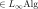
. لهذه الجبور أقواس -ية لكل
-ية لكل 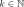
،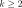
على مركب سلسلي؛ -
•
جبور تفاضلية متدرجة
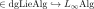
. هذه هي جبور ذات أقواس ثنائية على الأكثر،
ومن ثم فهي جبور لي في فئة المركبات السلسلية؛
ذات أقواس ثنائية على الأكثر،
ومن ثم فهي جبور لي في فئة المركبات السلسلية؛
-
•
جبور لي

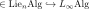
. هذه هي جبور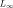
التي يكون مركبها السلسلي الكامن متركزاً في الدرجات من 0 إلى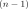
، وتسمى أيضاً جبور -حدية من نوع
-حدية من نوع  ؛
؛
-
•
جبور لي
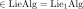
. هذه هي جبور لي المعتادة، أي جبور لي 1، منظورة بوصفها جبور أو جبور لي تفاضلية متدرجة يكون مركبها السلسلي الكامن
متركزاً في الدرجة 0.
أو جبور لي تفاضلية متدرجة يكون مركبها السلسلي الكامن
متركزاً في الدرجة 0.
إن مفهوم
جبور لي  بالمعنى الهوموتوبي لجبور
بالمعنى الهوموتوبي لجبور  -حدية من نوع
-حدية من نوع  ، العائد أصلاً إلى Stasheff
[25]، يختلف عن
تعريف مشابه على نحو فضفاض يرجع إلى Filippov وصار معروفاً باسم جبور لي-
، العائد أصلاً إلى Stasheff
[25]، يختلف عن
تعريف مشابه على نحو فضفاض يرجع إلى Filippov وصار معروفاً باسم جبور لي- .
لكن جبور لي-3 بالمعنى Filippov الموجودة على حجم عالم برانات M2 المتطابقة
هي حالة خاصة من جبور
.
لكن جبور لي-3 بالمعنى Filippov الموجودة على حجم عالم برانات M2 المتطابقة
هي حالة خاصة من جبور  مترية [31, section 2.5].
لاحظ أن جبور
مترية [31, section 2.5].
لاحظ أن جبور  (الفائقة) تؤدي دوراً في الجاذبية الفائقة ونماذج سيغما للبرانات الفائقة
(الفائقة) تؤدي دوراً في الجاذبية الفائقة ونماذج سيغما للبرانات الفائقة  منذ [1]، حيث تظهر في صورتها المزدوجة المكافئة، أي
جبور Chevalley-Eilenberg التفاضلية المتدرجة (“FDA”s)، كما يوضح [36].
منذ [1]، حيث تظهر في صورتها المزدوجة المكافئة، أي
جبور Chevalley-Eilenberg التفاضلية المتدرجة (“FDA”s)، كما يوضح [36].
الدافع الأساسي لإيجاد جبر  للتيارات هو أنه يحتفظ
بمعلومات محلية أكثر عن النظام المدروس. وهذا يقع ضمن الروح العامة
لتنقيح نظريات الحقول إلى ما يسمى نظريات حقول “ممتدة” أو “متعددة الطبقات”؛
ونحيل القارئ إلى مقدمات [20, 17]
للمزيد عن هذه الخلفية العامة.
وتصبح الحاجة إلى تنقيح جبور لي 1 للتناظرات المتناهية الصغر إلى جبور
للتيارات هو أنه يحتفظ
بمعلومات محلية أكثر عن النظام المدروس. وهذا يقع ضمن الروح العامة
لتنقيح نظريات الحقول إلى ما يسمى نظريات حقول “ممتدة” أو “متعددة الطبقات”؛
ونحيل القارئ إلى مقدمات [20, 17]
للمزيد عن هذه الخلفية العامة.
وتصبح الحاجة إلى تنقيح جبور لي 1 للتناظرات المتناهية الصغر إلى جبور  أوضح
كلما هدف المرء إلى الانتقال من التناظرات المتناهية الصغر إلى التناظرات المنتهية. ففي مثال نظريات الحقول من
نمط WZW، لا يكون اللاگرانجي شكلاً تفاضلياً معرفاً عالمياً، بل يكون اتصالاً على حزمة عليا
(جيرب أعلى) على فضاء الحقول. وهنا تكون الطريقة الوحيدة حتى لرؤية البنية الكاملة للتناظرات المنتهية
هي العمل في نظرية الهوموتوبي.
أوضح
كلما هدف المرء إلى الانتقال من التناظرات المتناهية الصغر إلى التناظرات المنتهية. ففي مثال نظريات الحقول من
نمط WZW، لا يكون اللاگرانجي شكلاً تفاضلياً معرفاً عالمياً، بل يكون اتصالاً على حزمة عليا
(جيرب أعلى) على فضاء الحقول. وهنا تكون الطريقة الوحيدة حتى لرؤية البنية الكاملة للتناظرات المنتهية
هي العمل في نظرية الهوموتوبي.
بعد أن نكون قد ميّزنا الجبور العليا كما سبق، سنصف طريقتين للعودة إلى جبور “أدنى” (بالمعنى الفئوي)، بما في ذلك جبور لي العادية:
-
1.
الاقتطاع: في القسم 3 ننظر في اقتطاعات ملائمة للجبور العليا إلى بنى أكثر كلاسيكية، وذلك بالتحكم في طول المركب السلسلي المقابل. فمعطاة أي بنية عليا هوموتوبية، ومن ثم نمط
 هوموتوبي، يوجد اقتطاعها “نزولاً” إلى نمط 0،
ويحصل عليه بقسمة كل التناظرات. وهذه العملية تنسى عموماً كثيراً من البنية المهمة، لكن
الشيء الناتج يكون أحياناً أسهل تعرّفاً ومقارنة بالمفاهيم التقليدية.
نميّز جبر التيارات المقابل الناتج عن اقتطاع جبور بواسون العليا.
هوموتوبي، يوجد اقتطاعها “نزولاً” إلى نمط 0،
ويحصل عليه بقسمة كل التناظرات. وهذه العملية تنسى عموماً كثيراً من البنية المهمة، لكن
الشيء الناتج يكون أحياناً أسهل تعرّفاً ومقارنة بالمفاهيم التقليدية.
نميّز جبر التيارات المقابل الناتج عن اقتطاع جبور بواسون العليا. -
2.
النقل العابر: نشرح في القسم 4 كيف أن جبر
 الكامل للتيارات المحفوظة
يقبل تطبيقات إلى جميع انتقالاته العابرة، ومن ثم إلى نتائج تقييم
التيارات المحفوظة على دورات من أي بعد. فمثلاً، ينتقل جبر لي 2 للتيارات
في نموذج WZW ذي البعد 2 إلى جبر لي الحلقي الممتد مركزياً “الأفيني” للتيارات
بتكامل التيارات على دائرة. وقد جرى إبراز مسألة الحصول على بنية فضاءات الحلقات من نوع 1
انطلاقاً من بنية 2 (رصية، جيربية) على الفضاءات القاعدية الأصلية عبر النقل العابر
بوضوح في [11, p. 249].
الكامل للتيارات المحفوظة
يقبل تطبيقات إلى جميع انتقالاته العابرة، ومن ثم إلى نتائج تقييم
التيارات المحفوظة على دورات من أي بعد. فمثلاً، ينتقل جبر لي 2 للتيارات
في نموذج WZW ذي البعد 2 إلى جبر لي الحلقي الممتد مركزياً “الأفيني” للتيارات
بتكامل التيارات على دائرة. وقد جرى إبراز مسألة الحصول على بنية فضاءات الحلقات من نوع 1
انطلاقاً من بنية 2 (رصية، جيربية) على الفضاءات القاعدية الأصلية عبر النقل العابر
بوضوح في [11, p. 249].
ثم في القسم 5 نناقش تطبيق الإنشاء السابق
على نماذج سيغما للبرانات الفائقة  .
.
-
•
إن التطبيق على دوال الفعل من نمط Green-Schwarz لنماذج سيغما للبرانات الفائقة
 ينتج تنقيحات بجبر لي فائق
ينتج تنقيحات بجبر لي فائق  لامتدادات شحنات برانات BPS المركزية التقليدية لجبور التناظر الفائق.
ونناقش ذلك في عمومية
الهندسة العليا حيث ينطبق أيضاً على البرانات ذات الحقول المعيارية العليا على حجم عالمها.
لامتدادات شحنات برانات BPS المركزية التقليدية لجبور التناظر الفائق.
ونناقش ذلك في عمومية
الهندسة العليا حيث ينطبق أيضاً على البرانات ذات الحقول المعيارية العليا على حجم عالمها. -
•
وعلى وجه التحديد، فإن التطبيق على نموذج سيغما للبرانة M5 يستعيد امتداد جبر لي الفائق لنظرية M للتساويات الفائقة ذات 11 بعداً بواسطة شحنات 2-برانية و5-برانية.
-
•
وعند تجاوز نظرية لي المتناهية الصغر نجد تصحيحات تماثلية مشتركة للشحنات أعلاه على نحو أعلى مماثل للتصحيحات المألوفة لشحنات D-برانية عند رفعها من التماثل المشترك العادي إلى نظرية K الملتوية. وهذا يدعم المقترح القائل إن شحنات M-برانية تعيش في نظرية تماثل مشترك ملتوية [33, 34, 35] ويدعمه أيضاً التحليل المصاحب في [22].
2 جبور لي  لقوس بواسون
لقوس بواسون
نبدأ بمراجعة موجزة للمفاهيم والنتائج الملائمة من [17] بطريقة تجعل علاقتها بالتيارات المحفوظة ظاهرة. ولرؤية أصل التناظر الأعلى في جبور التيارات بشفافية كاملة، من المفيد اعتماد المنظور العام الآتي.
تقليدياً، يُنظر إلى لاغرانجي محلي لنظرية حقلية ذات بعد  بوصفه شكلاً تفاضلياً مناسباً من الدرجة
بوصفه شكلاً تفاضلياً مناسباً من الدرجة 
 على حزمة النفاثات لحزمة الحقول في النظرية.
(إذا اختير شكل حجم مرجعي
على حزمة النفاثات لحزمة الحقول في النظرية.
(إذا اختير شكل حجم مرجعي
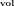
على الزمكان/حجم العالم، فإن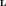
يكون متناسباً مع ذلك الشكل،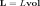
، وتكون الدالة المعاملية هي ما يعدّ في كثير من الكتب الدراسية اللاگرانجي.)
غير أنه معروف جيداً، وإن لم يكن مقدّراً على نطاق واسع، أن بعض نظريات الحقول الأساسية موضع الاهتمام
(النظريات التغايرية محلياً [15]) لا يكون
اللاگرانجي فيها في الحقيقة شكلاً تفاضلياً
هي ما يعدّ في كثير من الكتب الدراسية اللاگرانجي.)
غير أنه معروف جيداً، وإن لم يكن مقدّراً على نطاق واسع، أن بعض نظريات الحقول الأساسية موضع الاهتمام
(النظريات التغايرية محلياً [15]) لا يكون
اللاگرانجي فيها في الحقيقة شكلاً تفاضلياً  عالمياً. بل يكون كذلك محلياً فقط، أما عالمياً فهو
اتصال بشكل
عالمياً. بل يكون كذلك محلياً فقط، أما عالمياً فهو
اتصال بشكل  على “حزمة
على “حزمة  ” أو “جيرب
” أو “جيرب  ”.
وهذا هو الحال خصوصاً في نظريات الحقول من
نمط Wess-Zumino-Witten؛ انظر [21] لمراجعة هذه الحقيقة ولإحالات إلى الأدبيات.
”.
وهذا هو الحال خصوصاً في نظريات الحقول من
نمط Wess-Zumino-Witten؛ انظر [21] لمراجعة هذه الحقيقة ولإحالات إلى الأدبيات.
حتى إذا صادف أن  معطى بشكل
معطى بشكل  تفاضلي معرف عالمياً، فإن من المفيد مع ذلك عدّه
شكل الاتصال
تفاضلي معرف عالمياً، فإن من المفيد مع ذلك عدّه
شكل الاتصال  على حزمة
على حزمة  تافهة فوق فضاء الحقول، لأن هذا المنظور هو ما
يجعل واضحاً فوراً أن هناك تناظرات-للتناظرات عليا، وكيف تظهر.
تافهة فوق فضاء الحقول، لأن هذا المنظور هو ما
يجعل واضحاً فوراً أن هناك تناظرات-للتناظرات عليا، وكيف تظهر.
ولالتقاط هذا الوضع رياضياً، من المفيد النظر إلى كائن بسيط ذي
اسم طموح: رصة الموديولي الملساء الكلية لاتصالات  ،
ونرمز إليها بـ
،
ونرمز إليها بـ  .
يمكن للقارئ أن يجد عرضاً ومقدمة لهذه الكائنات في سياق نظرية الحقول في [20]،
لكن هذا الكائن يوصف ويفهم بسهولة أصلاً من خلال خاصيته الكلية التعريفية.
أي إن كونه رصة موديولي ملساء كلية للاتصالات العليا
يعني بالضبط أنه
فضاء أملس معمم من نوع ما، له الخواص المميزة الآتية:
لأي
.
يمكن للقارئ أن يجد عرضاً ومقدمة لهذه الكائنات في سياق نظرية الحقول في [20]،
لكن هذا الكائن يوصف ويفهم بسهولة أصلاً من خلال خاصيته الكلية التعريفية.
أي إن كونه رصة موديولي ملساء كلية للاتصالات العليا
يعني بالضبط أنه
فضاء أملس معمم من نوع ما، له الخواص المميزة الآتية:
لأي  متشعب أملس، فإن
متشعب أملس، فإن
-
1.
الدوال الملساء
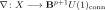
تقابل تكافئياً اتصالات بأشكال على
على  ؛
؛
-
2.
الهوموتوبيات الملساء بين هذه الدوال تقابل تكافئياً التحويلات المعيارية بين اتصالين كهذين
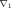
و؛ -
3.
الهوموتوبيات بين الهوموتوبيات تقابل تحويلات معيارية-للمعيارية، وهكذا، حتى هوموتوبيات-لهوموتوبيات مطبقة
 مرة.
مرة.
عندما تكون الاتصالات
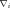
معطاة بأشكال تفاضلية معرفة عالمياً
معرفة عالمياً 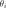
، فإن التحويل المعياري بينها ليس إلا شكلاً
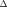
بحيث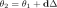
، حيث يدل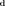
على تفاضل دي رام. وبناءً على ذلك يكون التحويل المعياري-للمعيارية شكلاً من الدرجة ، إلخ، حتى التحويل المعياري-للمعيارية من الرتبة الذي يكون (ليس شكلاً من الدرجة 0 بل) دالة ذات قيم في
الذي يكون (ليس شكلاً من الدرجة 0 بل) دالة ذات قيم في 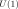
.ملاحظة 2.1.
(i) من المزايا الفورية لـ “تمثيل” الاتصالات والأشكال التفاضلية بخرائط إلى كائن مثل
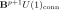
أنه يجعل “تغايرها العكسي” ظاهراً مع تتبع التحويلات المعيارية العليا. تحديداً، إذا أُعطي اتصال بشكل
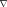
على وأُعطيت
خريطة بين فضاءات، فإن الاتصال المسحوب
وأُعطيت
خريطة بين فضاءات، فإن الاتصال المسحوب 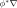
هو ببساطة الاتصال الممثل بالخريطة المركبة(ii) لنفترض إذن أن  فضاء حقول لنظرية حقلية ما، وغالباً هو حزمة النفاثات لحزمة الحقل.
عندئذ يتضح ما ينبغي أن يكون عليه تناظر لهذا
فضاء حقول لنظرية حقلية ما، وغالباً هو حزمة النفاثات لحزمة الحقل.
عندئذ يتضح ما ينبغي أن يكون عليه تناظر لهذا  : أي تشاكل تفاضلي
: أي تشاكل تفاضلي
لفضاء الحقول، بحيث يكون  محفوظاً به حتى تحويل معياري محدد
.
محفوظاً به حتى تحويل معياري محدد
.
(ii) في اللغة البيانية التي أنشأناها، يعني ذلك فقط أن التناظر هو زوج
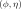
يسم مخططاً من الشكلوهذا مكافئ للقول إنه إذا صادف أن  معطى بشكل
معطى بشكل  معرف عالمياً
معرف عالمياً  ،
فإن الهوموتوبي يُعطى بشكل
،
فإن الهوموتوبي يُعطى بشكل
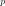
 بحيث
بحيث
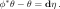 |
وعلاوة على ذلك، إذا كان لدينا تدفق أملس ذو وسيط 1
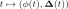
لهذه التناظرات، فإن اشتقاق هذه العلاقة بالنسبة إلى يعطي تعبير تناظر متناهٍ في الصغر لـ
يعطي تعبير تناظر متناهٍ في الصغر لـ  :
:
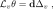 |
حيث  هو حقل المتجهات للتدفق
هو حقل المتجهات للتدفق
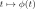
، و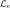
هو مشتق لي الخاص به، وحيث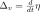
. لاحظ أنه إذا فكر المرء في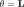
بوصفه الشكل اللاگرانجي لنظرية حقلية، فإن هذا هو بالضبط التعبير عن تناظر “ضعيف” للاغرانجي، أي تحويل يترك اللاگرانجي ثابتاً حتى إضافة حد تام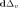
.من المفيد إعادة كتابة ذلك مكافئاً كما يأتي: ليكن
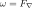
دالاً على شكل الانحناء للاتصال
ذي الشكل
للاتصال
ذي الشكل  . فإذا كان الاتصال معطى بشكل تفاضلي
. فإذا كان الاتصال معطى بشكل تفاضلي  معرف عالمياً
معرف عالمياً  ،
فإن هذا ببساطة هو
،
فإن هذا ببساطة هو 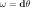
. وتعطي صيغة كارتان عندئذ أن التقلص تام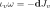 |
مع
بوصفه نوعاً من تحويل ليجندر لحد التضعيف.
إذا كنا نعد
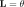
لاغرانجياً محلياً من نمط WZW، فإن التعبير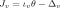
هو شحنة نوثر المحفوظة المستحثة من التناظر . وهذا هو التأويل الذي يهمنا هنا، لأنه ما
يربط بتصور شحنات BPS من تيارات نوثر لحدود WZW العليا
في [2].
. وهذا هو التأويل الذي يهمنا هنا، لأنه ما
يربط بتصور شحنات BPS من تيارات نوثر لحدود WZW العليا
في [2].
(على نحو أعم، عندما لا يكون  مجرد حد WZW، يجب تنقيح المناقشة،
وأخذ
مجرد حد WZW، يجب تنقيح المناقشة،
وأخذ  أعلاه ليكون حزمة نفاثات وإدماج التحليل الأفقي/الرأسي للمركب التغايري الثنائي
للأشكال على تلك الحزمة. وستناقش هذه العمومية الإضافية في مكان آخر؛ أما هنا
فنركز على الحدود الطوبولوجية من نمط WZW الأعلى.)
أعلاه ليكون حزمة نفاثات وإدماج التحليل الأفقي/الرأسي للمركب التغايري الثنائي
للأشكال على تلك الحزمة. وستناقش هذه العمومية الإضافية في مكان آخر؛ أما هنا
فنركز على الحدود الطوبولوجية من نمط WZW الأعلى.)
من أجل 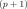 تكون العلاقات أعلاه معروفة جيداً من الهندسة السمبلكتية، في الحالة التي يكون فيها
تكون العلاقات أعلاه معروفة جيداً من الهندسة السمبلكتية، في الحالة التي يكون فيها  شكلاً (قبل-)سمبلكتياً. وبما أن هذه هي المشابهة الصحيحة، فإننا نقول أيضاً إن شكلاً مغلقاً من الدرجة
شكلاً (قبل-)سمبلكتياً. وبما أن هذه هي المشابهة الصحيحة، فإننا نقول أيضاً إن شكلاً مغلقاً من الدرجة 
 هو شكل متعدد السمبلكتية من الدرجة
هو شكل متعدد السمبلكتية من الدرجة  أو شكل
أو شكل  .
.
تعريف 2.2.
(i) يسمى الشكل المغلق 
 على متشعب
على متشعب  أيضاً شكلاً قبل-
أيضاً شكلاً قبل- -بلكتيكياً،
ويسمى الزوج
-بلكتيكياً،
ويسمى الزوج  متشعباً قبل-
متشعباً قبل- -بلكتيكياً.
-بلكتيكياً.
(ii) إذا أعطي مثل ذلك، فإن
حقل متجهات  بحيث يسمى حقل متجهات قبل-
بحيث يسمى حقل متجهات قبل- -بلكتيكي.
-بلكتيكي.
(iii) وإذا وُجد، فوق ذلك، شكل 
 مع
مع
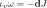
فإن يسمى حقل متجهات هاميلتوني ويسمى
يسمى حقل متجهات هاميلتوني ويسمى  شكلاً هاميلتونياً
لـ
شكلاً هاميلتونياً
لـ  . ويكون الزوج
. ويكون الزوج 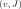
عندئذ زوجاً هاميلتونياً.(iv) إذا كان  غير منحط بمعنى أن
نواة التقلص تنعدم، فإن
غير منحط بمعنى أن
نواة التقلص تنعدم، فإن  يكون
محدداً وحيداً بتياره
يكون
محدداً وحيداً بتياره  ؛ وفي هذه الحالة نسمي
؛ وفي هذه الحالة نسمي 
 -بلكتيكياً
(بدلاً من مجرد قبل-
-بلكتيكياً
(بدلاً من مجرد قبل- -بلكتيكي).
-بلكتيكي).
وهذه هي الحالة التي كثيراً ما يقتصر عليها في الأدبيات، لكن النظرية كلها تسري في الحالة قبل البلكتيكية باستعمال هذه الأزواج الهاميلتونية بدلاً من الأشكال الهاميلتونية فقط.
تعريف 2.3.
(i) نكتب
 |
للفضاء الخطي للأزواج أعلاه، ونتحدث عن مرصودات هاميلتونية محلية.
(ii) ونكتب
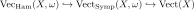 |
للفضاءات الجزئية لحقول المتجهات السمبلكتية والهاميلتونية.
لاحظ أن كلا الاحتواءين أعلاه جبران جزئيان من نوع لي تحت قوس لي القانوني لحقول المتجهات.
وعند النظر إلى  بوصفه لاغرانجياً محلياً، يجد المرء عندئذ أن
التقلص
بوصفه لاغرانجياً محلياً، يجد المرء عندئذ أن
التقلص
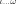
ينعدم على المماسات لمسارات الحقل التي تحل معادلات الحركة المقابلة. ونتيجة لذلك يكون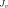
تياراً محفوظاً على الغلاف، مستحثاً من التناظر المعطى. وهذه حالة خاصة من مبرهنة نوثر -البلكتيكية العامة
[38].
-البلكتيكية العامة
[38].
بعد ذلك، تشكل التناظرات كما سبق زمرة بطريقة بينة، حيث تكون عملية التركيب هي لصق المخططات
| (1) |
وبحساب قوس لي لهذه الزمرة الليّة يجد المرء (كحالة خاصة مما يرد عموماً في التعريف 2.6 أدناه) أن القوس على هذه الأزواج الهاميلتونية
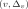
(من التعريف 2.2) يعطى بـ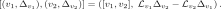 |
ملاحظة 2.4.
في الحالة التي يكون فيها  معطى بشكل معرف عالمياً
معطى بشكل معرف عالمياً  ونفكر فيه بوصفه لاغرانجياً محلياً كما سبق، بحيث تكون
ونفكر فيه بوصفه لاغرانجياً محلياً كما سبق، بحيث تكون  هي تيارات نوثر المحفوظة له، فإنه بعد الانتقال إلى أصناف تماثل دي رام المشترك، يمكن تعريف القوس أعلاه بما
يعرف باسم قوس Dickey على تيارات نوثر [14] [8, (3.10)].
نعمم ذلك إلى الحالة التي لا يفترض فيها أن
هي تيارات نوثر المحفوظة له، فإنه بعد الانتقال إلى أصناف تماثل دي رام المشترك، يمكن تعريف القوس أعلاه بما
يعرف باسم قوس Dickey على تيارات نوثر [14] [8, (3.10)].
نعمم ذلك إلى الحالة التي لا يفترض فيها أن  تام عالمياً
أدناه في القضية 3.6.
تام عالمياً
أدناه في القضية 3.6.
![$$
[(v_1,\Delta_{v_1}), (v_2,\Delta_{v_2}) ]
=
([v_1, v_2], \Delta_{[v_1,v_2]}) + (0, \mathcal{L}_{v_1} \Delta_{v_2} - \mathcal{L}_{v_2} \Delta_{v_1} - \Delta_{[v_1,v_2]})\;.
$$](equations/eq_0174.svg)
 . وسنعود إلى هذا المثال أدناه في القسم
. وسنعود إلى هذا المثال أدناه في القسم لذلك وجدنا جبور التيارات التقليدية من حساب بياني لتناظرات الاتصالات العليا.
ملاحظة 2.5.
وهذا يبرز نقطتين يبدو أنهما لم تعالجا صراحة في الأدبيات التقليدية:
-
1.
الزمر العليا: عندما
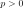
، تكون زمرة التناظرات زمرة عليا (رصة زمرة عليا) من تناظرات-للتناظرات ذات رتبة أعلى. تحديداً، قد تكون للهوموتوبيات في المخطط (1) نفسها هوموتوبيات-بين-الهوموتوبياتتقابل تحويلات معيارية-للمعيارية. ومن ثم، بعد اشتقاق لي، وفوق قوس لي للتيارات المحفوظة أعلاه، توجد تحويلات معيارية ذات رتبة أعلى بين هذه التيارات. ويمكن فهم هذه التحويلات على نحو مباشر من حقيقة أن اختيار
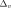
أعلاه ليس وحيداً بوضوح إلا حتى إضافة حدود تامة، وتكون كموناتها بدورها غير وحيدة إلا حتى حدود تامة، وهكذا. ونتيجة لذلك لا نجد مجرد جبر لي، بل جبر لي تفاضلياً متدرجاً للتيارات، يكون تفاضله هو تفاضل دي رام المؤثر في أشكال التيار ذات الرتبة الأعلى. -
2.
التماثل المشترك المنقح والأشكال العليا: في كامل العمومية، ينبغي إجراء المناقشة أعلاه ليس فقط لـ
 معرفة عالمياً، بل لما قبل التكميم الأعلى
معرفة عالمياً، بل لما قبل التكميم الأعلى  المعطى بسنن Čech-Deligne ذات انحناء هو شكل
المعطى بسنن Čech-Deligne ذات انحناء هو شكل 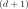
 .
وهذا يتيح إدراج المعطيات الهندسية عبر التماثل المشترك التفاضلي.
.
وهذا يتيح إدراج المعطيات الهندسية عبر التماثل المشترك التفاضلي.
وبإدماج هذه الأمور يكون جبر لي التفاضلي المتدرج الناتج هو المعطى في [17, Def./Prop. 4.2.1]:
ليكن  متشعباً أملس، و
شكلاً تفاضلياً مغلقاً من الدرجة ، مع النظر إلى
متشعباً أملس، و
شكلاً تفاضلياً مغلقاً من الدرجة ، مع النظر إلى  بوصفه متشعباً قبل-
بوصفه متشعباً قبل- -بلكتيكياً.
وليكن ما قبل تكميم أعلى لـ
-بلكتيكياً.
وليكن ما قبل تكميم أعلى لـ  معطى بسنن Čech-Deligne
بالنسبة إلى غطاء لـ
معطى بسنن Čech-Deligne
بالنسبة إلى غطاء لـ  . اكتب
لمركب Čech-de Rham للغطاء، ولاحظ أن مشتقات لي لـ
. اكتب
لمركب Čech-de Rham للغطاء، ولاحظ أن مشتقات لي لـ  تُعد طبيعياً ذات قيم في هذا المركب. عندئذ لدينا:
تُعد طبيعياً ذات قيم في هذا المركب. عندئذ لدينا:
تعريف 2.6.
إن جبر لي التفاضلي المتدرج لقوس بواسون
هو جبر لي التفاضلي المتدرج الذي يكون مركبه السلسلي الكامن ذا المركبات
مع التفاضل ، وتكون أقواس لي غير المنعدمة فيه هي
يتبين أن هناك تجسيداً مختلف المظهر جداً لكنه مكافئ لهذا
الجبر  ، وقد دُرس أصلاً في
[32]:
، وقد دُرس أصلاً في
[32]:
تعريف 2.7 (قوس بواسون الأعلى للمرصودات المحلية).
عند إعطاء متشعب قبل- -بلكتيكي ،
-بلكتيكي ،
(i) نقول إن مركب دي رام المقتطع المنتهي بالأزواج الهاميلتونية
من التعريف 2.3
هو مركب المرصودات المحلية لـ  ، ويرمز إليه بـ
، ويرمز إليه بـ
مع في الدرجة صفر.
(ii) إن قوس بواسون الأعلى الثنائي على المرصودات الهاميلتونية المحلية هو التطبيق الخطي
المعطى بالصيغة
![\begin{equation}\label{eq.Lie-bracket}
\left[
\left(v_1, J_1\right),
\left(v_2, J_1\right)
\right]
:=
\left[
\left(
\left[v_1, v_2\right],
\,
\iota_{v_1 \wedge v_2}\omega
\right)
\right]
\,;
\end{equation}](equations/eq_0206.svg) |
(2) |
(iii) ومن أجل
يكون قوس بواسون الأعلى  -ي هو
التطبيق الخطي
-ي هو
التطبيق الخطي
المعطى بالصيغة
![$$
\left[
\left(v_1, J_1\right),\,
\cdots,
\left(v_k, J_k\right)
\right]
:=
(-1)^{\lfloor \frac{k-1}{2}\rfloor}
\iota_{v_1 \wedge \cdots \wedge v_k}
\omega
\,.
$$](equations/eq_0210.svg) |
(iv) يسمى المركب السلسلي للمرصودات المحلية المجهز بهذه التطبيقات الخطية
لكل  جبر
جبر  لقوس بواسون الأعلى لـ
لقوس بواسون الأعلى لـ
 ، ويرمز إليه بـ
، ويرمز إليه بـ

نود أن نكتسب فهماً إضافياً لهذه الجبور  .
الفكرة هي أننا، بدءاً من ، نستطيع النظر إليه كمركب سلسلي بوضعه
في درجات مختلفة مع جعل الدرجات المتبقية صفراً. وينتج عن إزاحة الدرجات
صعوداً ونزولاً نظائر رصية للمؤثر المصنِّف . وعندما تكون الرصة الناتجة منبسطة، نرمز إلى ذلك برمز موسيقي .
.
الفكرة هي أننا، بدءاً من ، نستطيع النظر إليه كمركب سلسلي بوضعه
في درجات مختلفة مع جعل الدرجات المتبقية صفراً. وينتج عن إزاحة الدرجات
صعوداً ونزولاً نظائر رصية للمؤثر المصنِّف . وعندما تكون الرصة الناتجة منبسطة، نرمز إلى ذلك برمز موسيقي .
تعريف 2.9.
من أجل  متشعب أملس، نرمز بـ
متشعب أملس، نرمز بـ
-
1.
إلى
 جبر لي
جبر لي  أبلي معطى بالمركب السلسلي
أبلي معطى بالمركب السلسليحيث في الدرجة 0؛
-
2.
وبـ
 إلى جبر لي
إلى جبر لي  أبلي معطى بالمركب السلسلي، مع إدراج حد إضافي واحد،
أبلي معطى بالمركب السلسلي، مع إدراج حد إضافي واحد،
حيث في الدرجة صفر.
نبدأ بربط الأخير بحقول المتجهات الهاميلتونية.
ملاحظة 2.10.
من [17, Proposition 3.2.3]
توجد النتيجة الآتية.
من أجل  متشعب قبل-
متشعب قبل- -بلكتيكي، فإن التطبيقات متعددة الخطية
-بلكتيكي، فإن التطبيقات متعددة الخطية
تعرف مورفزماً من نوع  وهذا هو السنن الأعلى من نمط Kirillov-Kostant-Souriau لجبر
وهذا هو السنن الأعلى من نمط Kirillov-Kostant-Souriau لجبر  -لي، سنن
-لي، سنن  ، على جبر لي
لحقول المتجهات الهاميلتونية، ذي
القيم في جبر
، على جبر لي
لحقول المتجهات الهاميلتونية، ذي
القيم في جبر  الأبلي المرتبط بالمتشعب قبل-
الأبلي المرتبط بالمتشعب قبل- -بلكتيكي
-بلكتيكي  .
.
تتميّز جبور  في الملاحظة 2.8
كما يأتي.
في الملاحظة 2.8
كما يأتي.
ملاحظة 2.11.
من [17, Theorem 3.3.1]، إن جبر لي  لقوس بواسون هو
امتداد لجبر لي لحقول المتجهات الهاميلتونية، التعريف 2.2،
بواسطة جبر لي
لقوس بواسون هو
امتداد لجبر لي لحقول المتجهات الهاميلتونية، التعريف 2.2،
بواسطة جبر لي  الأبلي
المستحث من سنن جبر
الأبلي
المستحث من سنن جبر  -لي من نمط Kirillov-Kostant-Souriau، سنن
-لي من نمط Kirillov-Kostant-Souriau، سنن  ، .
أي إن هناك متتالية ألياف هوموتوبية لجبور
، .
أي إن هناك متتالية ألياف هوموتوبية لجبور  من الشكل
من الشكل
هنا يأتي التشاكل الرأسي من الإسقاط
(من الأزواج الهاميلتونية إلى حقول المتجهات الهاميلتونية، التعريف 2.3)
الذي يستحث مورفزماً خطياً غامراً لجبور  .
.
3 الاقتطاع إلى جبور لي عادية
نود النظر في اقتطاعات ملائمة نزولاً إلى بنى أكثر كلاسيكية. ويتحكم في ذلك ضبط
“حجم” المركب السلسلي المقابل.
فمعطاة أي بنية عليا هوموتوبية، ومن ثم نمط  هوموتوبي، يوجد اقتطاعها “نزولاً” إلى نمط 0،
ويحصل عليه بقسمة كل التناظرات. وهذه العملية تنسى عموماً كثيراً من البنية المهمة، لكن
الشيء الناتج يكون أحياناً أسهل تعرّفاً ومقارنة بالمفاهيم التقليدية.
هوموتوبي، يوجد اقتطاعها “نزولاً” إلى نمط 0،
ويحصل عليه بقسمة كل التناظرات. وهذه العملية تنسى عموماً كثيراً من البنية المهمة، لكن
الشيء الناتج يكون أحياناً أسهل تعرّفاً ومقارنة بالمفاهيم التقليدية.
في الحالة الخاصة البسيطة للمركبات السلسلية لفضاءات متجهية في درجات غير سالبة (وفق اصطلاحات الدرجات الهومولوجية)، يكون اقتطاع 0 هو المؤثر
الذي يرسل مركباً سلسلياً إلى زمرة تماثله من الدرجة 0
نناقش الآن اقتطاع 0 هذا لجبور لي  للتيارات المحفوظة التي نوقشت في
القسم السابق، القسم 2.
للتيارات المحفوظة التي نوقشت في
القسم السابق، القسم 2.
لمّة 3.1.
إن مؤثر اقتطاع 0 على المركبات السلسلية يستحث مؤثراً
حيث يدل على فئة جبور  المتركزة في الدرجات غير السالبة، مع مورفزمات
المتركزة في الدرجات غير السالبة، مع مورفزمات  كمورفزمات، ويدل على فئة جبور لي مع مورفزمات جبور لي. وبصورة أوضح، يرسل جبر
كمورفزمات، ويدل على فئة جبور لي مع مورفزمات جبور لي. وبصورة أوضح، يرسل جبر  متركزاً في الدرجات غير الموجبة إلى جبر لي ، ويرسل مورفزم
متركزاً في الدرجات غير الموجبة إلى جبر لي ، ويرسل مورفزم 
 إلى مورفزم جبر لي ، حيث هو المركب الخطي لـ
إلى مورفزم جبر لي ، حيث هو المركب الخطي لـ  . وعلاوة على ذلك، فإن المورفزم الطبيعي للمركبات السلسلية هو مورفزم
. وعلاوة على ذلك، فإن المورفزم الطبيعي للمركبات السلسلية هو مورفزم  خطي طبيعي وغامر
خطي طبيعي وغامر
| (3) |
البرهان. بما أن المركب السلسلي متركز في الدرجات غير السالبة، فإن المركب السلسلي يتكون من الفضاء المتجهي متركزاً في الدرجة صفر. ومن ثم تتبع كل عبارات اللمّة مباشرة من ذلك.

ملاحظة 3.2.
تعني طبيعية مورفزم  الخطي
(3) أن لدينا، لأي مورفزم
الخطي
(3) أن لدينا، لأي مورفزم  بين جبور
بين جبور  متركزة في درجات غير سالبة، مخططاً تبديلياً لمورفزمات
متركزة في درجات غير سالبة، مخططاً تبديلياً لمورفزمات 
ننظر الآن إلى اقتطاع 0 لجبور بواسون المقابلة.
تعريف 3.3.
ليكن  متشعباً قبل-
متشعباً قبل- -بلكتيكياً.
اكتب
-بلكتيكياً.
اكتب
لاقتطاع 0 لـ .
لاحظ أنه باستعمال التعريف 2.6، والتعريف 2.7، والملاحظة 2.8،
وعن طريق اللمّة 3.1، يكون هذا هو خارج
بواسطة أشكال التيار التامة من الدرجة  . ونميّز الآن اقتطاع 0 هذا.
. ونميّز الآن اقتطاع 0 هذا.
قضية 3.4.
ليكن  متشعباً قبل-
متشعباً قبل- -بلكتيكياً.
عندئذ يكون جبر لي 1 للتيارات، التعريف 3.3،
امتداداً مركزياً لحقول المتجهات الهاميلتونية بواسطة جبر لي الأبلي
-بلكتيكياً.
عندئذ يكون جبر لي 1 للتيارات، التعريف 3.3،
امتداداً مركزياً لحقول المتجهات الهاميلتونية بواسطة جبر لي الأبلي
 لأشكال دي رام من الدرجة
لأشكال دي رام من الدرجة  . وبعبارة أخرى، إذا كتبنا من أجل
، فهناك متتالية قصيرة تامة من جبور لي
. وبعبارة أخرى، إذا كتبنا من أجل
، فهناك متتالية قصيرة تامة من جبور لي
و مركزي في  .
.
البرهان. من المتتالية القصيرة التامة للمركبات السلسلية المعطاة بالقضية 2.11
نحصل على المتتالية الطويلة التامة في التماثل
وبحسب اللمّة 3.1، تكون هذه متتالية قصيرة تامة من جبور لي. أما حقيقة
أن  مركزي في
مركزي في  فهي مباشرة من المعادلة (2).
فهي مباشرة من المعادلة (2).
ملاحظة 3.5.
في الحالة الخاصة التي يكون فيها  حزمة النفاثات لحزمة حقل، وعندما تكون
تفاضلات دي رام الظاهرة في كل مكان مقيدة بأن تكون التفاضلات الأفقية المقابلة،
وتحت الفرضية القائلة إن تماثل مركب دي رام الأفقي هذا
متركز في الدرجة 0، فقد أنشئت بنية
حزمة النفاثات لحزمة حقل، وعندما تكون
تفاضلات دي رام الظاهرة في كل مكان مقيدة بأن تكون التفاضلات الأفقية المقابلة،
وتحت الفرضية القائلة إن تماثل مركب دي رام الأفقي هذا
متركز في الدرجة 0، فقد أنشئت بنية  أخرى على مركب دي رام المقتطع
الظاهر في التعريف 2.7 في [7].
ويبين فحص الإنشاء حول المبرهنة 7 هناك أن جبر
أخرى على مركب دي رام المقتطع
الظاهر في التعريف 2.7 في [7].
ويبين فحص الإنشاء حول المبرهنة 7 هناك أن جبر  هذا
مكافئ، بمعنى
هذا
مكافئ، بمعنى  ، لاقتطاعه 0
، لاقتطاعه 0  ، والذي يكون تحت هذه
الفرضيات هو جبر Dickey [14]؛ انظر التعليقات أعلاه في
القسم 2. ومن ثم فإن الجبر في [7]، لكل أغراض
نظرية الهوموتوبي، هو هذا الاقتطاع 0.
، والذي يكون تحت هذه
الفرضيات هو جبر Dickey [14]؛ انظر التعليقات أعلاه في
القسم 2. ومن ثم فإن الجبر في [7]، لكل أغراض
نظرية الهوموتوبي، هو هذا الاقتطاع 0.
ومن أجل مقارنة القضية 3.4 أكثر بالأدبيات القائمة، ننظر الآن في اختيار أشكال تيار هاميلتونية لكل مولد تناظر. والعبارة الآتية هي للتعريف 2.7 ما كانت الملاحظة 2.4 للتعريف 2.6.
قضية 3.6.
 ، القضية
، القضية  تاماً عالمياً عبر
تاماً عالمياً عبر  ، فإن ذلك يختزل بدلالة التيارات
إلى
، فإن ذلك يختزل بدلالة التيارات
إلىالبرهان. يستحث الشطر تماثل تشاكل خطياً من الشكل
وبهذا يقرأ قوس لي على على النحو الآتي
وبما أن ، فإن لدينا
وكذلك
ومن ثم، بالجمع، نستطيع أن نكتب
ولذلك
إذا أعطي، علاوة على ذلك، كمون عالمي  للشكل قبل-
للشكل قبل- -بلكتيكي
-بلكتيكي  ، أي إذا كان لدينا
شكل
، أي إذا كان لدينا
شكل 
 مع ، فعند كتابة نجد
مع ، فعند كتابة نجد
لذلك نحصل في النهاية على التعبير المطلوب
4 النقل العابر إلى جبور لي عادية
سننظر الآن في عملية أخرى للحصول على جبور لي عادية بدءاً من
جبورنا العليا.
فبينما اقتطاع 0 الذي نظرنا فيه في القسم
3 يكتفي بقسمة التحويلات المعيارية العليا ونسيانها
للحصول على جبر لي 1 عادي للتيارات،
توجد طريقة أخرى لتحويل جبر لي  أعلى للتيارات إلى جبر لي
أعلى للتيارات إلى جبر لي  من أجل يحتفظ بمعلومات أكثر: رياضياً هذا هو
النقل العابر، أما فيزيائياً فيقابل
العملية الطبيعية المتمثلة في تكامل التيارات المحلية على متشعبات جزئية ذات ترميز بعدي معين.
ومن الأمثلة البارزة
أن يتم ذلك على سطوح كوشي، بغية تحويلها إلى مرصودات عادية
(أي دوال على تشكيلات الحقول).
من أجل يحتفظ بمعلومات أكثر: رياضياً هذا هو
النقل العابر، أما فيزيائياً فيقابل
العملية الطبيعية المتمثلة في تكامل التيارات المحلية على متشعبات جزئية ذات ترميز بعدي معين.
ومن الأمثلة البارزة
أن يتم ذلك على سطوح كوشي، بغية تحويلها إلى مرصودات عادية
(أي دوال على تشكيلات الحقول).
إن تصور الزمر العليا للتيارات كما أشير إليه في القسم 2، عبر الأوتومورفيات المقطوعة فوق رصة موديولي تفاضلية عليا، يهيئ صورة واضحة لعملية النقل العابر للتيارات العليا كما يأتي.
نلاحظ أولاً أن النقل العابر للأشكال التفاضلية العادية له
الصياغة الحزمية الأنيقة الآتية. اكتب من أجل
حزمة الأشكال التفاضلية الملساء ذات الدرجة  (على موقع كل المتشعبات الملساء).
عندئذ، بلمّة يونيدا، يكون الشكل التفاضلي الملس
(على موقع كل المتشعبات الملساء).
عندئذ، بلمّة يونيدا، يكون الشكل التفاضلي الملس  على متشعب أملس ما
على متشعب أملس ما  مكافئاً لمورفزم في فئة الحزم
من الشكل
مكافئاً لمورفزم في فئة الحزم
من الشكل
والآن، إذا أعطي متشعب أملس مغلق وموجه  ذو بعد ، فاكتب
لفضاء التطبيقات، وهو الحزمة التي ترسل
متشعب اختبار إلى مجموعة مورفزمات الحزم ،
ومن ثم إلى مجموعة الأشكال التفاضلية الملساء
ذو بعد ، فاكتب
لفضاء التطبيقات، وهو الحزمة التي ترسل
متشعب اختبار إلى مجموعة مورفزمات الحزم ،
ومن ثم إلى مجموعة الأشكال التفاضلية الملساء  على .
ومن الفوري عندئذ أن تكامل الألياف العادي للأشكال التفاضلية
على الإسقاطات ، لكل
على .
ومن الفوري عندئذ أن تكامل الألياف العادي للأشكال التفاضلية
على الإسقاطات ، لكل  ممكن، يتجسد
في مورفزم واحد للحزم من الشكل
ممكن، يتجسد
في مورفزم واحد للحزم من الشكل
والآن، فإن تكوين حزمة التطبيقات الخارجة من  عملية مؤثرية، ومن ثم
نحصل من المكونات أعلاه على ما يأتي
عملية مؤثرية، ومن ثم
نحصل من المكونات أعلاه على ما يأتي
قضية 4.1.
ثمة مورفزم مركب من الشكل
يمثل شكلاً تفاضلياً على فضاء التطبيقات الملس .
النقطة الآن هي أنه، عند بسط كل التعريفات، يجد المرء
نتيجة 4.2.
أن
الشكل التفاضلي  هو النقل العابر
لـ
هو النقل العابر
لـ  إلى فضاء التطبيقات أعلاه، أي هو الشكل
، حيث
إلى فضاء التطبيقات أعلاه، أي هو الشكل
، حيث
خريطة التقييم.
مع أن هذه هي الصياغة التقليدية
للنقل العابر، فإن إعادة الصياغة أعلاه عبر حزم التطبيقات لها
ميزة أنها تعمم بأناقة من الأشكال التفاضلية 
 إلى ما قبل تكميمها بواسطة اتصالات
إلى ما قبل تكميمها بواسطة اتصالات 
 ،
التي نظرنا فيها في القسم 2.
،
التي نظرنا فيها في القسم 2.
تذكر أن تكامل الألياف للأشكال التفاضلية، منظوراً إليه كعملية على كل
ممكنة عندما يتغير  ، يمكن تلخيصه في مورفزم واحد
للحزم كما سبق. وبالمثل فإن تكامل الألياف لاتصالات
، يمكن تلخيصه في مورفزم واحد
للحزم كما سبق. وبالمثل فإن تكامل الألياف لاتصالات  ، ومن ثم تكامل الألياف
للسنن في التماثل المشترك التفاضلي العادي من الدرجة
، ومن ثم تكامل الألياف
للسنن في التماثل المشترك التفاضلي العادي من الدرجة  ، يُشفَّر تكافئياً
في [18] في مورفزم للرُّصص العليا الملساء من الشكل
، يُشفَّر تكافئياً
في [18] في مورفزم للرُّصص العليا الملساء من الشكل
وبامتلاك هذا نحصل مباشرة على
قضية 4.3.
(i) يوجد تشاكل طبيعي من زمرة  الملساء للتيارات المحفوظة
كما في القسم 2،
إلى زمرة
الملساء للتيارات المحفوظة
كما في القسم 2،
إلى زمرة  لـ نقلها العابر إلى فضاء التطبيقات الخارج من
لـ نقلها العابر إلى فضاء التطبيقات الخارج من  .
.
(ii) ويتم ذلك ببساطة بتطبيق المؤثر على مخططات القطع التعريفية، ثم إتباع القطع بالتركيب اللاحق مع ، كما هو مبين هنا:
ملاحظة 4.4.
إن العملية أعلاه تنقل عابراً الآن لا اتصال 
 فقط، الذي
هو في حالتنا لاغرانجي النظرية الحقلية المعطاة، بل تنقل عابراً أيضاً كل
التيارات المتجسدة في التكافؤات الموسومة بـ
فقط، الذي
هو في حالتنا لاغرانجي النظرية الحقلية المعطاة، بل تنقل عابراً أيضاً كل
التيارات المتجسدة في التكافؤات الموسومة بـ  . وعلى وجه التحديد،
إذا صادف أن
. وعلى وجه التحديد،
إذا صادف أن  معطى بشكل تفاضلي
معطى بشكل تفاضلي  معرف عالمياً
معرف عالمياً
 ، فإن
، فإن  يعطى، على المستوى المتناهي في الصغر، بتيار
شكلي من الدرجة
يعطى، على المستوى المتناهي في الصغر، بتيار
شكلي من الدرجة 
 ، وتأخذ العملية أعلاه ذلك إلى شكل نقله العابر
.
، وتأخذ العملية أعلاه ذلك إلى شكل نقله العابر
.
-
1.
عندما ، يكون هذا الشكل المنقول عابراً شكلاً من الدرجة 0، ومن ثم دالة، وله تأويل المرصود الفعلي المستحث من التيار
 .
. -
2.
وعموماً، من أجل
 تنعدم عند الطرف الأيمن كل الهوموتوبيات العليا، بسبب التركيب مع
الذي ينتهي في الرصة 1 ،
ومن ثم، في هذه الحالة، تتعامل خريطة الاقتطاع عبر اقتطاع 0 للزمرة على الطرف الأيسر،
الذي ناقشناه للتو أعلاه. وبهذه الطريقة يرسم اقتطاع 0 لجبر لي
تنعدم عند الطرف الأيمن كل الهوموتوبيات العليا، بسبب التركيب مع
الذي ينتهي في الرصة 1 ،
ومن ثم، في هذه الحالة، تتعامل خريطة الاقتطاع عبر اقتطاع 0 للزمرة على الطرف الأيسر،
الذي ناقشناه للتو أعلاه. وبهذه الطريقة يرسم اقتطاع 0 لجبر لي  للتيارات
إلى جبر لي الأفيني المعمم للتيارات، لكن الأخير قد يكون عموماً
أكبر.
للتيارات
إلى جبر لي الأفيني المعمم للتيارات، لكن الأخير قد يكون عموماً
أكبر.
مثال 4.5.
يعطى المثال النموذجي لهذه العملية بحالة نموذج WZW ثنائي البعد 3 على
زمرة لي مدمجة  . في هذه الحالة يكون
. في هذه الحالة يكون  أعلاه هو جيرب WZW
على الزمرة، ويكون
نقله العابر
حزمة مزودة باتصال على زمرة الحلقات. وبحسب نتائج
[16] تكون زمرة التيارات المستحثة من ذلك، كما نوقش أعلاه، هي
“زمرة الكوانتومورفيزمات” لهذه الحزمة منظورة بوصفها حزمة خطية قبل كمية في
معنى Souriau. ومن الحقائق الشهيرة [30] (انظر [37, around Prop. 42])
أن هذه هي الامتداد المركزي Kac-Moody لزمرة حلقات
أعلاه هو جيرب WZW
على الزمرة، ويكون
نقله العابر
حزمة مزودة باتصال على زمرة الحلقات. وبحسب نتائج
[16] تكون زمرة التيارات المستحثة من ذلك، كما نوقش أعلاه، هي
“زمرة الكوانتومورفيزمات” لهذه الحزمة منظورة بوصفها حزمة خطية قبل كمية في
معنى Souriau. ومن الحقائق الشهيرة [30] (انظر [37, around Prop. 42])
أن هذه هي الامتداد المركزي Kac-Moody لزمرة حلقات  ، وجبر لي الخاص بها
هو جبر لي الأفيني المقابل لـ
، وجبر لي الخاص بها
هو جبر لي الأفيني المقابل لـ  . وهذا هو جبر التيارات “المعهود” كما يظهر في
معظم الأدبيات الرياضية.
. وهذا هو جبر التيارات “المعهود” كما يظهر في
معظم الأدبيات الرياضية.
نرى هنا أن زمرة حلقات Kac-Moody هذه ليست إلا النقل العابر
لزمرة 2 الملساء لتيارات نموذج WZW، والتي هي، بحسب [16, 2.6.1]،
ما يسمى زمرة String 2 لـ  ، وأن
جبر لي الأفيني للتيارات ليس إلا النقل العابر لجبر لي
2 المقابل، وهو جبر لي 2 [6].
، وأن
جبر لي الأفيني للتيارات ليس إلا النقل العابر لجبر لي
2 المقابل، وهو جبر لي 2 [6].
ملاحظة 4.6.
ثمة صورتان من النقل العابر لهما صلة بالفيزياء:
-
1.
عندما يكون فضاء الهدف جداءً ، توجد مورفزم قانوني . والنقل العابر متبوعاً بالتركيب القبلي مع هذا الاحتواء
هو الاختزال البعدي المزدوج.
-
2.
وعلاوة على ذلك، عندما يكون مزوداً بنقطة أساس ، توجد أيضاً عملية التقييد المستحثة
مثال 4.7.
تحدث حالة الجداء كثيراً في حزمة دائرة نظرية M فوق زمكان ذي 10 أبعاد  .
إن تركيب الاختزال البعدي المزدوج مع التقييد هو، على سبيل المثال، ما يأخذ حقل C للجاذبية الفائقة ذات 11 بعداً
إلى حقل B وشكل Ramonf-Ramond (RR) في 10 أبعاد. وتتيح لنا العملية أعلاه
أن نفعل ذلك على مستوى الرصص، حيث تُحمل كل البنى الهندسية والمعيارية العليا
معاً. ويمكن العثور على منظور رصي لهذا في [19].
.
إن تركيب الاختزال البعدي المزدوج مع التقييد هو، على سبيل المثال، ما يأخذ حقل C للجاذبية الفائقة ذات 11 بعداً
إلى حقل B وشكل Ramonf-Ramond (RR) في 10 أبعاد. وتتيح لنا العملية أعلاه
أن نفعل ذلك على مستوى الرصص، حيث تُحمل كل البنى الهندسية والمعيارية العليا
معاً. ويمكن العثور على منظور رصي لهذا في [19].
5 تطبيق على شحنات البرانات
نناقش الآن كيف تقود الإنشاءات أعلاه إلى تطبيقات مثيرة للاهتمام في النماذج الفيزيائية
(فائقة التناظر).
نلاحظ أن كل المناقشة السابقة تعمم مباشرة إلى وضع
الجبر الفائق والهندسة الفائقة، حيث تعمم كل المتشعبات إلى متشعبات فائقة،
والأشكال التفاضلية إلى أشكال تفاضلية فائقة، وحيث تعمم جبور لي  إلى جبور لي فائقة
(انظر [21] للتفاصيل والإحالات إلى الأدبيات).
وهذا يعني أنه يمكننا تطبيق النتائج السابقة على المتشعبات الفائقة
إلى جبور لي فائقة
(انظر [21] للتفاصيل والإحالات إلى الأدبيات).
وهذا يعني أنه يمكننا تطبيق النتائج السابقة على المتشعبات الفائقة  كما تظهر في نظرية الجاذبية الفائقة العليا،
حيث تحمل أشكالاً فائقة
كما تظهر في نظرية الجاذبية الفائقة العليا،
حيث تحمل أشكالاً فائقة  خاصة تؤدي دور انحناءات حدود WZW
لنماذج سيغما للبرانات الفائقة
خاصة تؤدي دور انحناءات حدود WZW
لنماذج سيغما للبرانات الفائقة  من نمط Green-Schwarz، ذات فضاء الهدف
من نمط Green-Schwarz، ذات فضاء الهدف  .
.
ننظر في ذلك تفصيلاً. من أجل  تمثيل سبيني حقيقي لـ ، ليكن
هو زمكان Minkowski الفائق المقابل، منظوراً إليه بوصفه
زمرة لي فائقة للانتقالات. والشكل القانوني اليساري الثابت من الدرجة 1 على
يرمز إليه تقليدياً بـ ، حيث يمتد
تمثيل سبيني حقيقي لـ ، ليكن
هو زمكان Minkowski الفائق المقابل، منظوراً إليه بوصفه
زمرة لي فائقة للانتقالات. والشكل القانوني اليساري الثابت من الدرجة 1 على
يرمز إليه تقليدياً بـ ، حيث يمتد  على عناصر أساس خطية
لـ ويمتد
على عناصر أساس خطية
لـ ويمتد  على أساس لفضاء التمثيل الخطي
على أساس لفضاء التمثيل الخطي  .
ولجعل العبارات دقيقة، ليكن إذن بنداً في مسح البرانات القديم، أي ليكن
بحيث إن
.
ولجعل العبارات دقيقة، ليكن إذن بنداً في مسح البرانات القديم، أي ليكن
بحيث إن
 |
سنن لجبر لي فائق من الشكل المعطى (انظر [21] للمراجعة والتفاصيل).
وهذا هو حد انحناء WZW لنموذج سيغما Green-Schwarz للبرانات الفائقة  المنتشرة على .
المنتشرة على .
فمثلاً من أجل و و يوجد
سنن كهذا، وهو يشكل شكل الانحناء 3 لحد WZW ذي تناظر  للوتر الفائق من النمط IIB
على خلفية Minkowski.
وبصورة أعم، ليكن
للوتر الفائق من النمط IIB
على خلفية Minkowski.
وبصورة أعم، ليكن  متشعباً فائقاً أعم ممثلاً محلياً على
ومزوداً بحقل vielbein فائق (شكل تلحيم فائق)
متشعباً فائقاً أعم ممثلاً محلياً على
ومزوداً بحقل vielbein فائق (شكل تلحيم فائق)  وحقول أخرى ذات صلة،
بما في ذلك شكل فائق
وحقول أخرى ذات صلة،
بما في ذلك شكل فائق 
 . عندئذ تقيّد معادلات الحركة للجاذبية الفائقة
. عندئذ تقيّد معادلات الحركة للجاذبية الفائقة
 -الأبعادية ذات التناظر الفائق
-الأبعادية ذات التناظر الفائق  حقل vielbein بحيث يكون الجزء الفرميوني
حقل vielbein بحيث يكون الجزء الفرميوني
 من هو السحب الخلفي لـ
من هو السحب الخلفي لـ  عبر [9, 10].
عبر [9, 10].
وباتباع مصطلحات مألوفة من نظرية متشعبات ، يمكننا التعبير عن ذلك بالقول
إن  هو شكل محدد، معرِّف على .
ويمكننا النظر إلى الزوج بوصفه متشعباً فائقاً قبل-
هو شكل محدد، معرِّف على .
ويمكننا النظر إلى الزوج بوصفه متشعباً فائقاً قبل- -بلكتيكياً
وفق التعريف 2.2. وبهذه الصفة يستحث
جبر لي الفائق
-بلكتيكياً
وفق التعريف 2.2. وبهذه الصفة يستحث
جبر لي الفائق  لقوس بواسون الأعلى
لقوس بواسون الأعلى  ، كما في
التعريف 2.6، والتعريف 2.7،
والملاحظة 2.8.
، كما في
التعريف 2.6، والتعريف 2.7،
والملاحظة 2.8.
إن حقيقة أن معادلات حركة الجاذبية الفائقة تفرض أن يكون
محدداً على  تعني أن
تساويات تحفظ
تعني أن
تساويات تحفظ  ، ومن ثم فإن حقول متجهاتها ‘الفائقة’
(متجهات Killing وسبينورات Killing) هي حقول متجهات
، ومن ثم فإن حقول متجهاتها ‘الفائقة’
(متجهات Killing وسبينورات Killing) هي حقول متجهات  -بلكتيكية بالمعنى
الوارد في التعريف 2.2. ولا يوجد ضمان
بأن كل تساوٍ بالنسبة إلى حقل vielbein المعطى يحفظ
-بلكتيكية بالمعنى
الوارد في التعريف 2.2. ولا يوجد ضمان
بأن كل تساوٍ بالنسبة إلى حقل vielbein المعطى يحفظ  حتى تحويل معياري؛ أما تلك
التي تفعل ذلك فهي بالضبط التساويات الهاميلتونية بالمعنى الوارد في التعريف 2.2.
اكتب
حتى تحويل معياري؛ أما تلك
التي تفعل ذلك فهي بالضبط التساويات الهاميلتونية بالمعنى الوارد في التعريف 2.2.
اكتب
لاحتواء هذه في كل حقول المتجهات الهاميلتونية
تعريف 5.1.
 للتيارات
(التعريف
للتيارات
(التعريف  على التساويات، أي للجبر الفائق
على التساويات، أي للجبر الفائق  في مخطط السحب الخلفي الهوموتوبي
في مخطط السحب الخلفي الهوموتوبيما يأتي يعيد إنتاج النتيجة في [2, p.8] ويعممها.
قضية 5.2.
إن اقتطاع 0 إلى جبر لي فائق هو الامتداد المركزي
لجبر التناظر الفائق لـ  بواسطة شحنات البرانات
بواسطة شحنات البرانات  التي تلتف حول دورات غير تافهة.
التي تلتف حول دورات غير تافهة.
البرهان. ينتج هذا، عبر الملاحظة 3.6، من القضية 3.4، التي تعطي امتداداً
مصنفاً بواسطة . والعناصر في  هي شحنات البرانات
هي شحنات البرانات  .
.
ومن ثم تكون لدينا الصورة الآتية
هذه هي امتدادات التناظر الفائق المستحثة من نوع براني واحد، كما درست أصلاً في [2]. لكن من المفترض أن ينشأ “جبر النمط II” و“جبر نظرية M” [41, 24] من النظر ليس فقط في الأوتار والأغشية، بل أيضاً في البرانات التي قد تنتهي عليها هذه، أي برانات D والبرانة M5، على الترتيب. وبصورة لافتة، يعطى جبر التناظر الفائق لنظرية M على المولدات الفرميونية في التدوين المحلي التقليدي بالمركبات على صورة [41, 4]
| (4) |
حيث  هي مصفوفة اقتران الشحنة و
هي مصفوفة اقتران الشحنة و هي مصفوفات Dirac.
والحدود الثلاثة في الطرف الأيمن
تقابل شحنة شكل عزم الغرافيتون 1، وشحنة شكل الغشاء 2، وشحنة شكل البرانة الخماسية 5.
لاحظ مرة أخرى أن هذا التعبير التقليدي لا ينطبق إلا محلياً، على رقع من الزمكان متشاكلة تفاضلياً مع زمكان Minkowski
الفائق.
هي مصفوفات Dirac.
والحدود الثلاثة في الطرف الأيمن
تقابل شحنة شكل عزم الغرافيتون 1، وشحنة شكل الغشاء 2، وشحنة شكل البرانة الخماسية 5.
لاحظ مرة أخرى أن هذا التعبير التقليدي لا ينطبق إلا محلياً، على رقع من الزمكان متشاكلة تفاضلياً مع زمكان Minkowski
الفائق.
أما التحليل العالمي الصحيح لـ [2, p.8] وللقضية 5.2 فلا ينتج قط إلا
امتدادات بواسطة شحنات نوع براني واحد بلا حقول معيارية عليا على حجم عالمه.
لكننا أوضحنا في [21, 22, 39]
أن نماذج سيغما من نمط WZW للبرانات الفائقة  ذات الحقول المعيارية العليا على حجم عالمها
والتي قد تنتهي عليها البرانات الفائقة
ذات الحقول المعيارية العليا على حجم عالمها
والتي قد تنتهي عليها البرانات الفائقة  ، لا تُعرّف عالمياً على الزمكان الفائق الهدف
، لا تُعرّف عالمياً على الزمكان الفائق الهدف  نفسه،
بل على الفضاء الكلي لامتداد رصة فائقة
نفسه،
بل على الفضاء الكلي لامتداد رصة فائقة  للزمكان الفائق، وهو نفسه تنقيح تفاضلي للجيرب
للزمكان الفائق، وهو نفسه تنقيح تفاضلي للجيرب  الكامن وراء
حد WZW للبرانات
الكامن وراء
حد WZW للبرانات  .
وعلاوة على ذلك، بينّا في [16] أن
امتدادات Heisenberg-Kostant-Souriau العليا في الملاحظة 2.11 تتعمم إلى فضاءات قاعدية رصية عليا كهذه.
ويتبع ذلك تخطيطياً من الصورة الآتية، والتفاصيل الكاملة في [38, 39]:
.
وعلاوة على ذلك، بينّا في [16] أن
امتدادات Heisenberg-Kostant-Souriau العليا في الملاحظة 2.11 تتعمم إلى فضاءات قاعدية رصية عليا كهذه.
ويتبع ذلك تخطيطياً من الصورة الآتية، والتفاصيل الكاملة في [38, 39]:
(كل الخلايا 2 على اليسار مملوءة بهوموتوبيات للرُّصص العليا. ونحذفها من التدوين لمجرد الملاءمة وسهولة القراءة.)
هنا يكون التنقيح التفاضلي لـ هو ما يجعل حقل نموذج سيغما
زوجاً يتكون من تطبيق عادي إلى
الزمكان الهدف مع حقل معياري شكلي  ملتوي
على . وهذا هو النموذج العالمي للبرانات الفائقة
ملتوي
على . وهذا هو النموذج العالمي للبرانات الفائقة  ذات حقول معيارية عليا من مضاعف التنسور
على حجم عالمها.
ذات حقول معيارية عليا من مضاعف التنسور
على حجم عالمها.
ومع أن هذا ضروري للصورة الكاملة، فإن زمرة التساويات
والتماثل المشترك لـ
يصعب حسابهما. لكن توجد خريطة نسيان قانونية
إلى التحقق الهندسي لهذه الرصة التفاضلية (منظوراً إليه نفسه كرصة ثابتة محلياً، انظر [38]
للتفاصيل). وبدمج نتائج [38] و[29]، يجد المرء في الحالة قيد النظر
أن هو النمط الهوموتوبي لحزمة الألياف فوق الزمكان  المصنفة بواسطة
الصنف الصحيح لحقل الخلفية الخاص بالبرانة
المصنفة بواسطة
الصنف الصحيح لحقل الخلفية الخاص بالبرانة  .
نحسب الآن التماثل المشترك لذلك التحقق الهندسي.
وفي نقاش كامل سيتعين على المرء سحب نتيجة الحساب الآتي إلى الخلف على طول الخريطة أعلاه إلى ،
وقد تعطي نواة وخارج نواة خريطة السحب هذه تصحيحات إضافية أخرى لشحنات البرانات.
.
نحسب الآن التماثل المشترك لذلك التحقق الهندسي.
وفي نقاش كامل سيتعين على المرء سحب نتيجة الحساب الآتي إلى الخلف على طول الخريطة أعلاه إلى ،
وقد تعطي نواة وخارج نواة خريطة السحب هذه تصحيحات إضافية أخرى لشحنات البرانات.
نتخصص في الحالة و الموافقة لبرانات M5 المنتشرة في مكثف برانات M2 [21]. أولاً، لننظر في التماثل المشترك للّيف . على المستوى الصحيح، هذا معروف لكنه ذو بنية معقدة. وبدلاً من ذلك سننظر في التماثل المشترك النسبي المقابل، وهو أيسر تناولاً بكثير. وبالفعل، ينتج مباشرة من مبرهنة Hurewicz ومبرهنة المعامل الكلي أن
عند إعطاء متتالية الألياف الهوموتوبية
تأخذ متتالية Serre الطيفية للتماثل المشترك الشكل
ومن التماثل المشترك للّيف المحدد أعلاه، نرى أن يجب أن يكون إما 0 أو 3 كي يساهم. التفاضل الملائم هو إذن ، وهو يرفع درجة التماثل المشترك بمقدار 4.
لذلك فإن امتداد شحنات البرانات للتساويات الفائقة ذات 11 بعداً يكون، نسبياً، بواسطة ، وبحسب متتالية Serre الطيفية يكون هذا هو التماثل المشترك الأوسط لـ
| (5) |
حيث هو الجداء الكأسي مع الصنف ذي الدرجة 4 لحقل C. وبالنسبة إلى حقول C الالتوائية فإن هذا ينعدم نسبياً، ومن ثم يصل المرء إلى نتيجة أن امتداد جبر لي الفائق لنظرية M يكون بواسطة شحنات برانية في ، موافقاً لنتيجة الحجة في [40]. أما بالنسبة إلى حقول C غير الالتوائية، أو عند النظر لا نسبياً فقط، فتوجد تصحيحات على هذه العبارة بواسطة نواة وخارج نواة . لاحظ أن هذه التصحيحات تماثل مباشرة التصحيح بواسطة نواة وخارج نواة تفاضل في متتالية Atiyah-Hiruebruch الطيفية، الذي يظهر عند تنقيح شحنات D-برانية من التماثل المشترك العادي إلى نظرية K الملتوية [26, (3.2), (3.6)]. وإن القول بأن شحنات البرانات 5 ينبغي أن تكون بهذه الطريقة في نظرية تماثل مشترك ملتوية من الدرجة 4 قد اقتُرح سابقاً في [35, section 8] ونوقش ذلك أكثر في [22].
References
- 1 R. D’Auria and P. Fré, Geometric supergravity in and its hidden supergroup, Nucl. Phys. B 201 (1982), 101–140, ncatlab.org/nlab/files/GeometricSupergravity.pdf
- 2 J. A. de Azcárraga, J. Gauntlett, J. Izquierdo, and P. Townsend, Topological extensions of the supersymmetry algebra for extended objects, Phys. Rev. Lett. 63 (1989), 2443, inspirehep.net/record/26393
- 3 J. A. de Azcárraga, J. Izqierdo, Lie Groups, Lie Algebras, Cohomology and Some Applications in Physics, Cambridge Monographs of Mathematical Physics, (1995)
- 4 D. Alekseevsky, V. Cortés, C. Devchand, A. Van Proeyen, Polyvector Super-Poincaré Algebras, Commun. Math. Phys. 253 (2004) 385–422, arXiv:hep-th/0311107
- 5 M. F. Atiyah. G. Segal, Twisted K-theory and cohomology, arXiv:math/0510674
- 6 J. Baez, C. Rogers, Categorified symplectic geometry and the string Lie 2-algebra, Homology Homotopy Appl. 12 (2010), 221–236, arXiv:0901.4721
- 7 G. Barnich, R. Fulp, T. Lada, J. Stasheff, The sh Lie structure of Poisson brackets in field theory, Commun. Math. Phys. 191 (1998), 585–601, arXiv:hep-th/9702176
- 8 G. Barnich, M. Henneaux, Isomorphisms between the Batalin-Vilkovisky antibracket and the Poisson bracket, J. Math. Phys. 37 (1996), 5273–5296, arXiv:hep-th/9601124
- 9 E. Bergshoeff, E.Sezgin, P. Townsend, Superstring actions in curved superspace, Phys. Lett. B169 (1986), 191–196.
- 10 E. Bergshoeff, E.Sezgin, P. Townsend, Supermembranes and eleven dimensional supergravity, Phys. Lett. B189 (1987), 75–78, streaming.ictp.trieste.it/preprints/P/87/010.pdf
- 11 J.-L. Brylinski, Loop spaces, Characteristic Classes and Geometric Quantization, Birkhäuser (1993).
- 12 A. Callister, D.Smith, Topological BPS charges in 10 and 11-dimensional supergravity, Phys. Rev. D78 (2008), 065042, arXiv:0712.3235
- 13 C. Chryssomalakos, J. A. de Azcárraga, J. M. Izquierdo, J. C. Peŕez Bueno, The geometry of branes and extended superspaces, Nucl. Phys. B 567(2000), 293–330, arXiv:hep-th/9904137
- 14 L. Dickey, Soliton equations and Hamiltonian systems, Advanced Series in Mathematical Physics, Vol. 12, World Scientific (1991).
- 15 M. Ferraris, M. Palese, E. Winterroth, Local variational problems and conservation laws Differential Geometry and its Applications 29 (2011) S80-S85
- 16 D. Fiorenza, C. L. Rogers, U. Schreiber, Higher -gerbe connections in geometric prequantization, Rev. in Math. Phys., Volume 28, Issue 06, July 2016 arXiv:1304.0236
-
17
D. Fiorenza, C. L. Rogers, U. Schreiber,
-algebras of local observables from higher prequantum bundles,
Homology, Homotopy and Applications,
16 (2014), 107–142,
arXiv:1304.6292
- 18 D. Fiorenza, H. Sati, U. Schreiber, Extended higher cup-product Chern-Simons theories, J. Geom. Phys. 74 (2013), 130–163, arXiv:1207.5449
- 19 D. Fiorenza, H. Sati, U. Schreiber, The moduli 3-stack of the C-field in M-theory, Commun. Math. Phys. 333, 1 (2015),117-151, [arXiv:1202.2455].
- 20 D. Fiorenza, H. Sati, U. Schreiber, A higher stacky perspective on Chern-Simons theory, in Damien Calaque et al. (eds.) Mathematical Aspects of Quantum Field Theories Springer 2014, arXiv:1301.2580
-
21
D. Fiorenza, H. Sati, U. Schreiber,
Super Lie
 -algebra extensions, higher WZW models and super p-branes with tensor multiplet fields,
Intern. J. Geometric Methods Mod. Phys.
12 (2015) 1550018,
arXiv:1308.5264
-algebra extensions, higher WZW models and super p-branes with tensor multiplet fields,
Intern. J. Geometric Methods Mod. Phys.
12 (2015) 1550018,
arXiv:1308.5264
- 22 D. Fiorenza, H. Sati, U. Schreiber, The WZW term of the M5-brane and differential cohomotopy, J. Math. Phys. 56, 102301 (2015) arXiv:1506.07557
- 23 M. Henneaux, L. Mezincescu, A Sigma model interpretation of Green-Schwarz covariant superstring action, Phys. Lett. B152 (1985) 340–342, inspirehep.net/record/15922
- 24 C. Hull, Gravitational duality, branes and charges, Nucl. Phys. B509 (1998) 216–251, arXiv:hep-th/9705162
- 25 T. Lada, J. Stasheff, Introduction to sh Lie algebras for physicists, Int. J. Theo. Phys. 32 (1993) arXiv:hep-th/9209099
- 26 J. Maldacena, G. Moore, N. Seiberg, D-Brane instantons and K-theory charges, JHEP 0111 (2001) 062, arXiv:hep-th/0108100
- 27 M. Markl, S. Shnider, Differential operator endomorphisms of an Euler-Lagrange complex, Contemporary Mathematics, Volume 231, 1999
- 28 J. Mickelsson, Current Algebras and Groups, Springer, 1989.
- 29 D. Pavlov, D. Berwick-Evans and P. Boavida de Brito Concordance theory for homotopy sheaves in preparation
- 30 A. Pressley, G. Segal, Loop groups, Oxford University Press (1988).
- 31 P. Ritter, C. Saemann, Lie 2-algebra models, JHEP 04 (2014) 066 arXiv:1308.4892
-
32
C. Rogers,
-algebras from
multisymplectic geometry, Lett. Math. Phys. 100 (2012), 29–50,
arXiv:1005.2230.
- 33 H. Sati, Duality symmetry and the form fields of M-theory, J. High Energy Phys. 0606 (2006) 062, arXiv:hep-th/0509046
- 34 H. Sati, An approach to anomalies in M-theory via KSpin, J. Geom. Phys. 58 (2008), 387--401, arXiv:0705.3484
- 35 H. Sati, Geometric and topological structures related to M-branes, part I, Proc. Symp. Pure Math. 81 (2010), 181--236, arXiv:1001.5020
-
36
H. Sati, U. Schreiber, J. Stasheff,
L∞-algebra connections and applications to String- and
Chern-Simons -transport,
In Recent developments in QFT, 303--424,
Birkhäuser (2009),
arXiv:0801.3480
- 37 G. Segal, Loop groups, people.mpim-bonn.mpg.de/zagier/files/doi/10.1007/BFb0084581/chapter08.pdf
-
38
U. Schreiber,
Differential cohomology in a cohesive topos, arXiv:1310.7930,
ncatlab.org/schreiber/show/differential+cohomology+in+a+cohesive+topos -
39
U. Schreiber,
Structure theory for higher WZW terms,
lecture notes accompanying a minicourse at:
H. Sati (org.)
Flavors of cohomology,
Pittsburgh, June 2015
ncatlab.org/schreiber/show/Structure+Theory+for+Higher+WZW+Terms - 40 D. Sorokin, P. Townsend, M-theory superalgebra from the M-5-brane, Phys. Lett. B412 (1997) 265--273, arXiv:hep-th/9708003
-
41
P. Townsend,
-Brane democracy, in Particles, Strings and Cosmology,
eds. J. Bagger, G. Domokos, A Falk and S. Kovesi-Domokos , pp.271-285, World
Scientific, 1996,
arXiv:hep-th/9507048
- 42 A. Vinogradov, J. Krasilshchik et al, Symmetries and conservation laws for differential equations of mathematical physics, vol. 182 of Translations of Mathematical Monographs, AMS (1999)